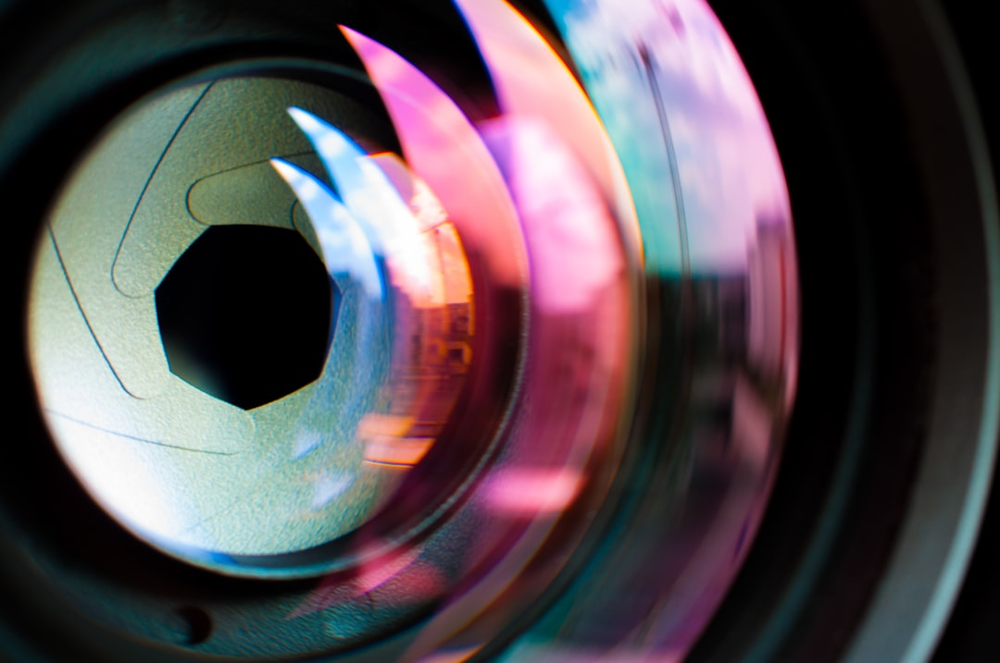

04 — The Optics
X · V · H
Lens
Where the sensor meets light. The glass —
센서가 빛을 담는 그릇이라면, 렌즈는 그 빛을 빚는 손입니다. 핫셀블라드의 광학은 마지막 한 결까지 다듬습니다.
XCD·HC·HCD 렌즈군은 각 시스템을 위해 설계되어, 중형 포맷 센서의 1억 화소를 한 치의 흐트러짐 없이 받아냅니다. 조리개 전 영역에서 균일한 해상력, 화면 가장자리까지 이어지는 선예도, 그리고 부드럽게 녹아드는 보케. 렌즈에 내장된 리프 셔터는 어떤 셔터 속도에서도 플래시와 완벽히 동기화되어, 태양 아래에서도 빛을 지배하게 합니다. 색은 과장 없이, 본 그대로. 그것이 핫셀블라드가 반세기 넘게 지켜온 광학의 약속입니다.
Specification
- 렌즈군
- XCD (X) · HC · HCD (H) · V 시스템 클래식 렌즈
- 해상력
- 조리개 전 영역 균일 · 1억 화소 센서 대응
- 셔터
- 렌즈 내장 리프 셔터 · 전 속도 플래시 동조
- 색 재현
- Hasselblad Natural Colour Solution (HNCS)
- 초점 거리
- 광각 21mm부터 망원까지 · 단렌즈 중심 라인업
- 보케
- 원형 조리개 · 자연스럽고 부드러운 아웃포커스

Your Frame